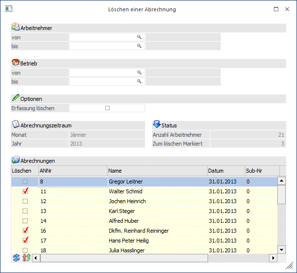
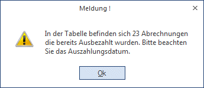
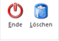

Durch Anwahl des Menüpunktes
1 Abrechnen
1 Löschen einer Abrechnung
können bereits durchgeführte Abrechnungen des laufenden Monats wieder gelöscht werden.
Abrechnungen eines Monats können aber nur bis zum Monatsabschluss durchgeführt werden. Nach dem Monatsabschluss können Abrechnungen nur durch eine Rollung korrigiert werden.

Einschränkungen
Ø Arbeitnehmer von - bis
Die Arbeitnehmer können eingegrenzt werden. Wie die AN-Nummer eingegeben werden kann, dazu gibt es mehrere Möglichkeiten. Details dazu entnehmen Sie bitte dem Kapitel Aufruf einer AN-Nummer. Wird in den Feldern von - bis ein AN eingetragen, so wird daneben der Name des AN angezeigt, wobei der Name unterstrichen dargestellt wird. Durch einen Klick auf den AN wird standardmäßig der AN-Stamm aufgerufen. Über die rechte Maustaste kann aber individuell eingestellt werden, welche Aktion ausgelöst werden soll. Dabei stehen folgende Optionen zur Verfügung:

ü Arbeitnehmerstamm
Es wird der
AN-Stamm aufgerufen, wobei gleich der Datensatz des angezeigten AN angezeigt
wird.
ü Arbeitnehmerinfo
Es wird die
Arbeitnehmerinfo im Programm WinLine INFO geöffnet.
ü Jahreslohnkonto
Es wird das
Steuerfenster für das Jahreslohnkonto aufgerufen, wo der ausgewählte AN gleich
vorgeschlagen wird. Die Ausgabe muss nur mehr durchgeführt werden.
ü Arbeitnehmer Stammblatt
Es wird
das Steuerfenster für das Arbeitnehmer Stammblatt aufgerufen, wo der ausgewählte
AN gleich vorgeschlagen wird. Die Ausgabe muss nur mehr durchgeführt werden.
ü Lohnerfassung A
Es wird die
Einzelabrechnung aufgerufen, wobei gleich alle Daten des ausgewählten AN
abgerufen werden. Bei diesen Punkt ist darauf zu achten, dass ggf. die
automatischen Lohnarten abgearbeitet werden.
Die zuletzt getätigte Einstellung wird als Standard übernommen, d.h. wenn das nächste Mal nur auf den AN-Namen geklickt wird, dann wird die letzte Aktion automatisch durchgeführt. Diese Einstellung wird pro Benutzer gespeichert.
Ø Betrieb von - bis
Die Auswertung kann zusätzlich auf Betriebsnummer eingeschränkt werden - es werden dann nur die AN angezeigt, die im ausgewählten Betrieb abrechnet wurden.
Ø Erfassung löschen
Wird diese Option aktiviert, dann werden zusätzlich zur Abrechnung auch noch die Erfassungszeilen und der Abrechnungsrecord gelöscht. Mit dieser Option wird praktisch der Ursprungszustand vor dem ersten Aufruf des AN in der Abrechnungsperiode wieder hergestellt, d.h. beim neuerlichen Aufruf des AN werden auch die automatischen Lohnarten nochmals angeworfen.
Ø Monat / Jahr
Hier wird das aktuelle Abrechnungsmonat bzw. -jahr angezeigt.
Wenn alle Selektionen getroffen wurden, wird durch Anklicken des Anzeigen-Button die Tabelle entsprechend der Einstellungen gefüllt. Wenn bereits Auszahlungen durchgeführt wurden, dann wird eine Meldung angezeigt, in der Darauf hingewiesen wird, dass sich in der Tabelle Abrechnungen befinden, die bereits ausgezahlt wurden.

Die gelb markierten Einträge sind die bereits ausbezahlten Abrechnungen. Wenn diese Abrechnungen neu gemacht werden, muss man sich selbst darum kümmern, dass ggf. nur mehr die Differenz gebucht wird.
Folgende Informationen sind in der Tabelle ersichtlich:
Alle AN, für die bereits eine Auszahlung vorgenommen wurde, werden in der Farbe Gelb angezeigt - dadurch kann erkannt werden, welche AN gesondert behandelt werden müssen.
Ø Löschen
Wird diese Checkbox aktiviert, wird die entsprechende Abrechnung zur Löschung markiert.
Ø ANNr.
Hier wird die AN-Nummer angezeigt.
Ø Name
Hier wird der AN-Name angezeigt.
Ø Datum
Das Datum der Abrechnung wird angezeigt.
Ø Sub-Nr
Hier wird die SUB-Nummer des Arbeitnehmers angezeigt, der abgerechnet wurde. Sind für den AN keine SUB-AN angelegt, wird hier immer die Nr. 0 angezeigt.
Ø Nettobetrag
In dieser Spalte wird der Netto-Auszahlungsbetrag der ursprünglichen Abrechnung angezeigt.
Ø Ausbezahlt
Wurde der Netto-Abrechnungsbetrag bereits ausgezahlt, wird in dieser Spalte das Datum der Auszahlung angezeigt.
Auf der linken Seite wird die Anzahl der AN angezeigt, die in der Tabelle gelistet werden. Darunter wird die Zahl der AN angezeigt, für die die Abrechnung gelöscht werden soll.
Buttons

Ø Ende
Durch Anklicken des Ende-Buttons wird das Fenster geschlossen - es werden keine Abrechnungen gelöscht.
Ø Löschen
Durch Anklicken des Löschen-Buttons werden alle selektierten Abrechnungen gelöscht.
Buttons in der Tabelle
Ø Anzeigen
Mittels Anzeigen Button werden die Abrechnungen in die Tabelle geladen
Ø Umkehren
Durch Anklicken des Umkehren-Buttons wird die Selektion in der Tabelle mit den AN ins Gegenteil gekehrt.
Beispiel:
Von 10 Abrechnungen, die in der Tabelle angezeigt werden, sollen 8 gelöscht werden. Es werden die zwei AN markiert, deren Abrechnung nicht gelöscht werden soll. Danach wird der Umkehren-Button aktiviert - jetzt sind die 8 zu löschenden Abrechnungen markiert.